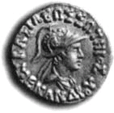

The Schism Chapter11. The Minor and Lesser Precepts“It has been said by the Blessed One, ‘It is from higher knowledge, O monks, that I teach Dhamma.’1 Yet he also said, ‘When I am gone, Ānanda, let the Order if it
should so wish, abolish the minor and lesser precepts.’2 Were then those precepts laid down in error and without due cause?” “When the Blessed One, O king, said, ‘Let the Order abolish the lesser and minor
precepts,’ it was said in order to test the monks. As a king on his death bed would test his sons saying, ‘The outer regions of my kingdom will be in danger of falling after my death.’ Then would his sons on the death of their father give up those outlying districts?” “No indeed, venerable sir. Kings are grasping. The princes might, in their lust for power, subjugate an
area twice what they already had but they would never willingly give up what they possessed.” “Just so, O king, the sons of the Buddha, in their enthusiasm for the Dhamma might keep even more than one hundred and fifty3 regulations but they would never give up any that had been laid down.” “Venerable Nāgasena, when the Blessed One referred to the ‘Minor and Lesser Precepts’ people might be in doubt as to which these were.” “Those acts of wrong-doing4 are the lesser precepts, and wrong speech5 refers to the minor precepts.
The elders who convened the First Buddhist Council were also not unanimous about this matter.” 12. The Esoteric Teaching“The Blessed One said to Ānanda, ‘In respect of the Dhamma the Tathāgata does not have the closed fist of a teacher who holds something back.’6 Yet when he was questioned by Mālunkyāputta he made no answer.7 Was it because of ignorance that he did not reply or did he wish to conceal something?”
“O king, it was not because of ignorance, nor for the sake of concealing anything that he did not answer. A question may be answered in one of four ways: directly, with an analysis, with a counter-question or by setting it aside. “And what sort of question should be answered directly?
‘Is matter impermanent? Is feeling impermanent? Is perception impermanent?’ These should be answered directly.
“And what should be answered with an analysis? ‘Is what is impermanent, matter?’
“And what should be answered with a counter-question? “And which should be set aside? ‘Is the world eternal? Is the world not eternal? Does the Tathāgata exist after death? Does he not exist after death? Is the soul the same as the body? Is the body one thing and the soul another?’ It was to this sort of question that the Blessed One gave no reply to Mālunkyāputta. There was no reason to answer it. The Buddhas do not speak without reason.”
13. The Fear of Death“The Blessed One said, ‘All tremble at punishment, all are afraid of death.’8 Yet he also said, ‘The
Arahant has passed beyond all fear.’9 How is it then? Do the Arahants tremble at the fear of death? Or are the beings in hell afraid of death by which they may gain release from torment?” “O king, it was not with regard to Arahants that the Blessed One said, ‘All tremble at punishment, all are
afraid of death.’ An Arahant is an exception to that statement for all cause of fear has been removed by him. Suppose, O king, a king had four chief ministers who were faithful and trustworthy; would they be afraid if the king were to issue an order saying, ‘All the people in my realm must pay a tax’?” “No, Nāgasena, they would not be afraid because the tax does not apply to them, they are beyond
taxation.” “Just so, O king, the statement, ‘All tremble at punishment, all fear death,’ does not apply to Arahants because they are beyond the fear of death. There are these five ways, O king, in which the meaning of a statement should be established: by comparison with the text quoted; by ‘taste’ i.e. is it in
accordance with other texts?; is it in accordance with the word of the teachers?; having considered his own opinion, i.e. is it in accordance with my own experience?; and, fifthly, by a combination of all these methods.” “Very well, Nāgasena, I accept that Arahants are an exception to that statement, but surely those
beings in hell cannot be afraid of the death by means of which they will gain release from that torment?” “Those in hell are afraid of death, O king, for death is a condition that all those who have not seen the Dhamma are afraid of. Suppose, O king, a man kept prisoner in a dungeon were to be sent for by the
king who wished to set him free. Wouldn’t that prisoner be afraid of meeting the king?” “Yes he would.” “Just so, O king, those beings in hell are afraid of death even though they will attain release from their torment.” 14. Protection from Death“It was said by the Blessed One, ‘Not in the sky, not in the ocean’s midst, not in the most secluded mountain cleft, not in the whole wide world is found the spot where remaining one could escape the snare of death.’10 Yet, on the other hand, the protection verses (paritta) were prescribed by the Buddha for the protection of those in danger. If there is no escape from death then the Paritta ceremony is useless.” “Paritta verses, O king, are meant for those who have some portion of their life remaining. There is no
ceremony or artificial means for prolonging the life of one whose life-span has come to an end.”
“But, Nāgasena, if he who has a term of life yet to run will live, and he who has none will die, then medicine and Paritta are alike useless.” “Have you ever seen or heard of a case of a disease being cured by medicine?”
“Yes, hundreds of times.” “Then your statement as to the ineffectiveness of Paritta and medicine must be wrong.”
“Venerable Nāgasena, is Paritta a protection to everybody?” “Only to some, not to all. There are three reasons for the failure of Paritta: the obstruction due to past
kamma, that caused by present defilements, and the obstruction caused by lack of confidence. That which is a protection to beings loses its power through their own blemishes.” 15. The Power of Māra “Although you say that the Tathāgata was in constant receipt of alms11 yet when he entered the Pañcasāla village he received nothing due to the intervention of Māra.12 Is the power of Māra greater than the power of the Buddha or the power of demerit greater than the power of merit?” “Great king, although what you said is true it is not enough reason to prove your assertion. Consider a
gatekeeper at a royal palace. He might prevent someone from bringing a present for the king out of jealousy yet the king would not thereby be less powerful than the gatekeeper. There are four modes of obstructing a gift: to a gift not intended for any particular person, to one set aside for someone, to one being prepared for someone and to the enjoyment of a gift given to someone. In the case you
mentioned the gift was not intended specifically for the Blessed One: if it had been no one could have obstructed it. “There are four things, O king, connected with the Tathāgatas, to which no one can do any harm: the alms intended for him, the halo that surrounds him for one fathom, his Omniscience and his life. These
things are free from defect and unassailable by other beings and cannot be harmed. When Māra possessed the householders of Pañcasāla village it was as when robbers, by hiding in inaccessible places, beset the highways. However, if the king caught sight of them do you think they would be safe?” “No, sir, he might have them cut to pieces.” “Just so, O king, if Māra had raised any obstruction to alms intended for the Blessed One his head would have split into a thousand pieces.” 16. Knowledge of Wrong Doing“This was said by the Blessed One, ‘Whoever ignorantly deprives a living being of life accumulates great demerit.’13 Yet in the training rule for monks concerning killing living beings he says, ‘There is no offence if he does not know.’14 How can both of these statements be true?” “There are offences where there is no escape for one who does not know and there are offences where there is an escape.15 It was in regard to this second kind of offence that the Blessed One said there is no offence if he does not know.” 17. The Buddha Is Not Possessive “The Blessed One said, ‘The Tathāgata does not think that he should lead the Order or that it is dependent upon him.’16 Yet regarding Metteyya Buddha he said, ‘He will be the leader of an Order of several thousands as I am now the leader of an Order of several hundreds.’”17 “O king, the sense in one passage is inclusive, in the other it is not. It is not the Tathāgata who seeks after a following but the followers who seek after him. It is merely a common opinion that ‘This is mine,’
it is not an ultimate truth. Affection is a frame of mind put away by the Tathāgata; he has put away possessiveness, he is free from the delusion ‘This is mine,’ he lives only to help others. Just as a mighty rain cloud, O king, pours out its rain, and gives sustenance to grass and trees, to cattle and to men, and all living things depend on it but the cloud has no feelings of longing with the idea that ‘These are
mine’ — so too, the Tathāgata instructs all beings in good qualities and maintains them in goodness, and all beings depend on him but he has no concept of possession because he has abandoned all wrong views of self.” 18. The Unity of the Order “You say that the Order of the Tathāgata could never be broken up.18 Yet Devadatta was able to lead away five hundred monks from the Blessed One”.19
“It was due to the power of the schismatic that the schism occurred for even a mother can be disunited from her son where there is one to make a rift. However, it was said in a special sense that the Order of the Tathāgata could not be broken up. It is an unheard of thing that his following could be
disunited by anything done or any unkind word, wrong action, or injustice whatsoever of the Tathāgata himself. In that sense his following is invulnerable.” In this chapter there are eight questions |